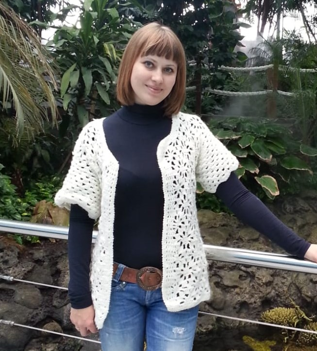

O trabalho “Portefólio Reflexivo de Aprendizagens” insere-se na avaliação final do Módulo PRA, no âmbito do Curso de Programador Informática do IEFP.
O trabalho contém:
• Apresentação pessoal/ profissional
• Apresentação de cada módulo, contempla a integração de trabalhos efetuados e respetivas reflexões.
• Balanço de aprendizagens e projetos futuros.
• Agradecimentos.
Olá, Sou Lyudmyla

Sobre mim
Nasci na Ucrania em Kherson, moro em Sintra.
Sou casada, tenho 2 filhos, adoro naturesa e dar passeios.
Sou dedicada, resiliente, focada e com gosto em aprender, trabalho bem em equipa.
Na Ucrania fiz Licenciatura em Pedagogia na Universidade de Melitopol.
Emigrei em Setembro 2007 para Portugal.
Desde Janeiro 2012 até Janeiro 2016 exerci funções como gerente na área de restauração.
Local de trabalho restaurante Oeiras city.
Ainda em Universidade adorava escrever pequenos sites em HTML. Juntando a isso ,
a minha curiosidade por aprender, saber como as coisas funcionam e gosto por computadores,
inscrevi-me neste curso de Programador de Informática.
Durante o curso, adquiri bases em:
C, C++, Cobol, Java, Python, JavaScript, CSS, HTML, VB .NET, C#, ASP. NET.
Sinto-me à vontade para trabalhar com Python e C# e Gostaria de oferecer todo o meu conhecimento
e dedicação ao cliente. Sempre tive uma paixão pelo desenvolvimento de software.
Formação Academica
Instituto de Emprego e Formação Profissional, Portugal
Qualificação: Programador da Informática, Julho 2021-actual
Universidade de Pedagogia , Melitopol Ucrânia,
Qualificação: Licenciatura em Pedagogia, 2003 - 2008